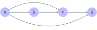

Partial orders
- relations (basic notation)
- sets (basic notation)
There are numerous types of order relations, but arguably the most common one is partial orders. Intuitively, a partial order is a linear order (also called total order) where we have removed some orderings between elements. Formally, though, things are defined exactly the other way round: linear orders are a special case of partial orders. Hence we will first define partial orders before turning to linear orders in the next unit.
Definition of partial orders
Partial orders can be defined very succinctly, but doing so requires specialized vocabulary.
A partial order is a binary relation \(R\) that is
- transitive: for all \(x, y, z\), \(x \mathrel{R} y\) and \(y \mathrel{R} z\) jointly imply \(x \mathrel{R} z\), and
- antisymmetric: for all \(x\) and \(y\), if \(x \mathrel{R} y\), and \(y \mathrel{R} x\) then \(x = y\), and
- either reflexive or irreflexive:
- reflexive: for all \(x\), it holds that \(x \mathrel{R} x\),
- irreflexive: there is no \(x\) such that \(x \mathrel{R} x\).
If the partial order is reflexive, it is a weak partial order. If it is irreflexive, it is a strict partial order.
This is a very abstract definition. In order to truly understand it, you have to develop an intuitive grasp of what each property means.
Transitivity
In a nutshell, transitivity says “Whatever you can reach in two steps, you can reach in one step”.
Suppose you have some set \(D\) of objects with a binary relation \(R\) defined over them. For example, we may have the set of natural numbers (0, 1, 2, ) with the strictly less than relation \(<\), where we have \(3 < 5\) and \(4 < 5\), but not \(5 < 5\) (although \(5 \leq 5\)). We can think of these as structures where the set specifies the collection of building blocks and the relation connects these building blocks, putting them into a particular structural configuration. We can move through \(D\) along \(R\): if we are at \(x \in D\), we can move to any \(y\) such that \(x \mathrel{R} y\). And from \(y\), we can move on to any \(z\) such that \(y \mathrel{R} z\), and so on.
From the natural number \(5\), we can move to \(17\) via \(<\), and from there to \(329\).
This movement metaphor is useful for understanding transitivity and other properties of relations. Some relations are such that whatever can be reached in two steps can also be reached in one step. So \(x \mathrel{R} y\) and \(y \mathrel{R} z\) entail that we also have \(x \mathrel{R} z\) — the ability to move from \(x\) to \(z\) via \(y\) implies that we can move directly from \(x\) to \(z\) without a stop at \(y\). This is what it means for a relation to be transitive.
A binary relation \(R\) over \(D\) is transitive iff for all \(x,y,z \in D\) it holds that \(x \mathrel{R} y\) and \(y \mathrel{R} z\) jointly imply \(x \mathrel{R} z\).
The human ancestor relation \(A\) is transitive. Your mother is one of your ancestors, and every ancestor of your mother is an ancestor of yourself. So \(x \mathrel{A} y\) and \(y \mathrel{A} z\) imply \(x \mathrel{A} z\).
The human parent-of relation is not transitive. There can be \(x\), \(y\), and \(z\) such that \(x\) is the parent of \(y\), \(y\) is the parent of \(z\), but \(x\) is not the parent of \(z\). In fact, that is how things are supposed to go in the real world and every deviation from this case is very problematic.
Crucially, for a relation to be transitive it is not enough to have some case where \(x \mathrel{R} y\) and \(y \mathrel{R} z\) jointly imply \(x \mathrel{R} z\). This has to hold in all cases, including those where \(x\), \(y\), and \(z\) are not necessarily all distinct.
Consider the sibling relation \(S\). There certainly are instances of transitivity. If John is a sibling of Mary and Mary is a sibling of Sue, then John is a sibling of Sue. However, even though John is a sibling of Mary and Mary is a sibling of John, John is not his own sibling. In formal terms, we have \(\text{John} \mathrel{S} \text{Mary}\) and \(\text{Mary} \mathrel{S} \text{John}\), yet \(\text{John} \not\mathrel{S} \text{John}\).
Let’s consider one more example of a relation that may look transitive but is not. You may love your parents, your parents love their parents, and you love your grandparents. So this is a case where we have \(x \mathrel{R} y\), \(y \mathrel{R} z\), and \(x \mathrel{R} z\). But this does not make love a transitive relation — it is perfectly possible for a person you love to love somebody that you do not love at all.
The examples above show that a relation is transitive only if there isn’t even a single counterexample to transitivity. If there is even one choice of \(x\), \(y\), and \(z\) such that \(x \mathrel{R} y\), \(y \mathrel{R} z\), but \(x \not\mathrel{R} z\), then \(R\) is not transitive.
Intuitively, transitivity tells us that whatever can be reached in two steps can be reached in one step. But this actually implies that anything that can be reached in a finite number of steps can be reached in one step. This follows by iterated invocation of transitivity. Suppose that \(a \mathrel{R} b\), \(b \mathrel{R} c\), and \(c \mathrel{R} d\). This is shown pictorially below.

Then by transitivity, we also have \(a \mathrel{R} c\).

But then, again by transitivity, we must also have \(a \mathrel{R} d\) because of \(a \mathrel{R} c\) and \(c \mathrel{R} d\).

Since we can apply the same argument over and over again, anything that can be reached with a finite number of steps can also be reached in a single step.
It is also important to keep in mind that some relations can be trivially transitive. Transitivity can be violated only if there are \(x\), \(y\), and \(z\) such that both \(x \mathrel{R} y\) and \(y \mathrel{R} z\) hold. If that is not the case, the relation is trivially transitive because there is no configuration where it violates transitivity.
Consider the relation with \(a_1 \mathrel{R} a_2\), \(b_1 \mathrel{R} b_2\), \(c_1 \mathrel{R} c_2\), and \(d_1 \mathrel{R} d_2\). It is also depicted below.

Here there is no way of choosing \(x\), \(y\), and \(z\) such that we have both \(x \mathrel{R} y\) and \(y \mathrel{R} z\). Consequently, transitivity holds because we cannot produce any counterexample to the claim that the relation is transitive.
Transitivity also does not imply that we every element is reachable from any other element in a single step. Nodes may still be unreachable from certain positions.
In the example above, there is no way at all to move from \(a_2\) to any other element.
The relation \(<\) over natural numbers is transitive. Yet it does not follow that \(5\) can be reached from \(8\), only the opposite holds: \(8\) can be reached from \(5\).
Consider the relation \(\sim\) over natural numbers such that \(x \mathrel{\sim} y\) iff \(x\) and \(y\) are both odd or \(x\) and \(y\) are both even. Is this relation transitive? Justify your answer.
Consider the relation \(\not\sim\) over natural number such that \(x \mathrel{\not\sim} y\) iff either \(x\) is odd and \(y\) is even or \(x\) is even and \(y\) is odd. Is this relation transitive? Justify your answer.
Antisymmetry
Antisymmetry can be thought of in two different ways that build on the metaphor of relations as adding arrows to the elements of a set:
- “If the order relation has any loops at all, those must be self-loops.”
- “If \(x\) and \(y\) are distinct, then they cannot be mutually related.”
Here a loop is a sequence of arrows that leads from an element back to itself. A self-loop is the special case of a loop where there is a single arrow that directly goes from the element back to itself. And “mutually related” means that there are arrows from one element to the other and the other way round.
These are intuitive interpretations of two equivalents definition of antisymmetry.
A binary relation \(R\) over \(D\) is antisymmetric iff \(x \mathrel{R} y\) and \(y \mathrel{R} x\) jointly imply \(x = y\) for all \(x, y \in D\).
A binary relation \(R\) over \(D\) is antisymmetric iff it holds for all \(x, y \in D\) that \(x \neq y\) implies \(x \not\mathrel{R} y\) or \(y \not\mathrel{R} x\) (or both).
Consider again the set of natural numbers with the relation \(<\), which is antisymmetric. Let us see how this follows from the first definition.
There are no natural numbers \(x\) and \(y\) such that \(x < y\) and \(y < x\) both hold. But then \(<\) is trivially antisymmetric. This is because the only way a relation \(R\) can fail to be antisymmetric is if there is a counterexample to antisymmetry. A counterexample would require \(x\) and \(y\) such that
- \(x \mathrel{R} y\), and
- \(y \mathrel{R} x\), and
- \(x \neq y\).
But if we cannot even find any \(x\) and \(y\) such that \(x \mathrel{R} y\) and \(y \mathrel{R} x\), then clearly there is no such counterexample.
Let us look one more time at the natural numbers with \(<\), but this time we will use the second definition. It requires that \(x \neq y\) entails \(x \not\mathrel{R} y\) or \(y \not\mathrel{R} x\) (or both). But this is obviously the case for \(<\). For instance, \(3 \neq 5\) and we have \(3 < 5\) but \(5 \not< 3\).
Give two arguments modeled after the ones above to show that \(\leq\) over the set of natural numbers is antisymmetric.
Earlier on we encountered the human ancestor relation. Is this relation antisymmetric?
Given an example to show that the human sibling relation is not antisymmetric.
Give an example to show that \(\sim\) as defined in a previous example is not antisymmetric.
Is \(\not\sim\) as defined in a previous example antisymmetric? Justify your answer.
(Ir)Reflexivity
Reflexivity and irreflexivity are much easier to understand that transitivity and, in particular, antisymmetry. Intuitively, they are statements about the presence of self-loops.
- Reflexivity: “Every element must have a self-loop.”
- Irreflexivity: “No element may have a self-loop.”
Let \(R\) be a binary relation over \(D\). Then \(R\) is reflexive iff \(x \mathrel{R} x\) holds for every \(x \in D\).
Let \(R\) be a binary relation over \(D\). Then \(R\) is irreflexive iff there is no \(x \in D\) such that \(x \mathrel{R} x\).
If there is at least one element that is not related to itself, then the relation is not reflexive. If there is at least one element that is related to itself, then the relation is not irreflexive. If it is neither reflexive nor irreflexive, it is non-reflexive.
The human parent-of relation is irreflexive because nobody can be their own parent.
Similarly, \(<\) over natural numbers is irreflexive because no number can be strictly less than itself. However, \(\leq\) is reflexive because \(x \leq x\) for every number \(x\).
Another reflexive relation is the relation induced by the identity function \(\mathrm{id}\), which maps every element to itself. This is shown below for the set \(\left \{ 1,2,3,4 \right \}\) with the identity relation:

Suppose that John voted for Mary, and Mary voted for herself. We can represent this as a relation \(V\) such that \(\text{John} \mathrel{V} \text{Mary}\) and \(\text{Mary} \mathrel{V} \text{Mary}\). This relation is not reflexive because \(\text{John} \not\mathrel{V} \text{John}\). But it isn’t irreflexive either because \(\text{Mary} \mathrel{V} \text{Mary}\). Hence it is non-reflexive.
Here’s a surprising one: there is a relation that is both reflexive and irreflexive. It’s the empty relation \(R\), whose domain is the empty set \(\emptyset\). In this case, there is no \(x \in D\) such that \(x \mathrel{R} x\), which means that \(R\) is irreflexive. But there’s also no \(x \in D\) such that \(x \not\mathrel{R} x\), which is the same as saying that \(x \mathrel{R} x\) holds for every \(x \in D\) (there simply happens to be no \(x\) at all in \(D\)). Consequently, \(R\) is also reflexive.
There is no relation that is reflexive, and irreflexive, and non-reflexive. Explain why!
For each one of the following relations, say whether it is reflexive, irreflexive, or non-reflexive. Justify your answers! If you have to make additional assumptions, explain what they are.
- the “younger than” relation
- the “sums to 10” relation over natural numbers (\(x \mathrel{R} y\) iff \(x + y = 10\))
- the “at least as rich as” relation
- the “voted for the same candidate” relation
- the “parent-of” relation over humans in a world with time travel
- the “reverse” relation over words (\(x \mathrel{R} y\) iff \(x\) is \(y\) read backwards; e.g. deer and reed)
Note that pictures can sometimes be misleading when it comes to (ir)reflexivity. Consider the figure below.

Here we have two elements \(a\) and \(b\) with an arrow from \(a\) to \(b\) and another from \(b\) to \(a\). It looks like this relation is irreflexive because no element has a self-loop. But it is common style for such figures to omit all connections that can be inferred via transitivity. So if this figure actually depicts a transitivity relation, then \(a \mathrel{R} b\) and \(b \mathrel{R} a\) implies \(a \mathrel{R} a\) because of transitivity. A clear violation of irreflexivity. In fact, transitivity would also entail \(b \mathrel{R} b\), rendering \(R\) reflexive.
A note on asymmetry and strict partial orders
Sometimes strict partial orders are given a definition that looks different but is actually equivalent to the one we used above. Instead of antisymmetry, this definition uses asymmetry.
A strict partial order is a binary relation \(R\) that is
- transitive: for all \(x, y, z\), \(x \mathrel{R} y\) and \(y \mathrel{R} z\) jointly imply \(x \mathrel{R} z\), and
- asymmetric: for all \(x\) and \(y\), if \(x \mathrel{R} y\) then \(y \not\mathrel{R} x\).
Explain in intuitive terms why the two definitions of strict partial orders are equivalent.
Hint: You have to explain why asymmetry is essentially the combination of antisymmetry and irreflexivity.
Recap
- Partial orders allow some elements to be unordered with respect to each other, but it is not a case of anything goes. Very specific properties must be met in order for a binary relation to be a partial order.
A partial order is a binary relation \(R\) that is transitive, antisymmetric, and either reflexive or irreflexive. If the partial order is reflexive, it is a weak partial order. If it is irreflexive, it is a strict partial order.
- Strict partial orders are sometimes defined as binary relations that are transitive and asymmetric. This definition is equivalent to the one above.
A binary relation \(R\) over \(D\) is
- transitive iff for all \(x,y,z \in D\) it holds that \(x \mathrel{R} y\) and \(y \mathrel{R} z\) jointly imply \(x \mathrel{R} z\).
- antisymmetric iff \(x \mathrel{R} y\) and \(y \mathrel{R} x\) jointly imply \(x = y\) for all \(x, y \in D\) (or equivalently, if \(x \neq y\) implies \(x \not\mathrel{R} y\) or \(y \not\mathrel{R} x\) or both).
- asymmetric iff \(x \mathrel{R} y\) implies \(y \not\mathrel{R} x\) for all \(x,y \in D\).
- reflexive iff \(x \mathrel{R} x\) holds for every \(x \in D\).
- irreflexive iff there is no \(x \in D\) such that \(x \mathrel{R} x\).
- non-reflexive if it is neither reflexive nor irreflexive.